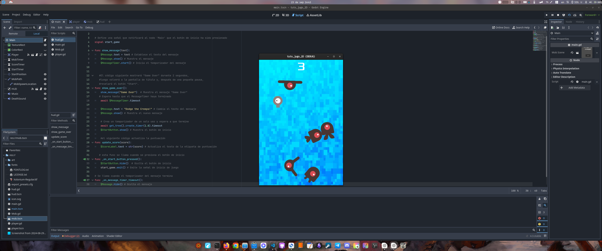

My First 2D Game with Godot
September 23, 2024
Today I completed my first 2D game following the tutorial from the official Godot documentation. This achievement, although it may seem small, is very significant for me as it's the first step at the beginning of this long journey towards creating this small but ambitious personal project.
Familiarizing Myself with Godot's Interface
Getting started with Godot was an interesting experience. I could say that the interface is quite intuitive and the integrated tools facilitate the learning process. Learning to navigate the Scene Editor, adjust node properties, and manage resources was fundamental to understanding how Godot works and was perhaps the easiest and quickest part to grasp.
Introduction to GDScript
One of the most complicated aspects for someone like me with no real knowledge in the area of programming was getting to know GDScript, Godot's scripting language. Its simple syntax and direct integration with the engine make it perfect for beginners. Writing scripts to control character behavior and interactions in the game gave me an essential first contact with programming within Godot. I can't say that I would be able to create a game after doing this tutorial, I don't even think I would be able to replicate what I did upon completing this 2D game, but it did give me a broader perspective on how this language works and helped me understand in general terms what could be achieved if I were to master Godot a little better.
Challenges Encountered
Although the tutorial provided clear guidance, it wasn't without challenges. I found difficulties in implementing certain functionalities, such as collision detection and input event management. However, each obstacle overcome gave me a deeper understanding of how to solve some of these problems. This official tutorial is an excellent gateway to learning more about Godot.
Next Steps
The next goal in my project is to address the implementation of mouse movement within a 2D scene for a point n' click game. This challenge will allow me to create the typical interaction of this type of game, which will be very useful in creating the scenes for the project I'm currently working on.